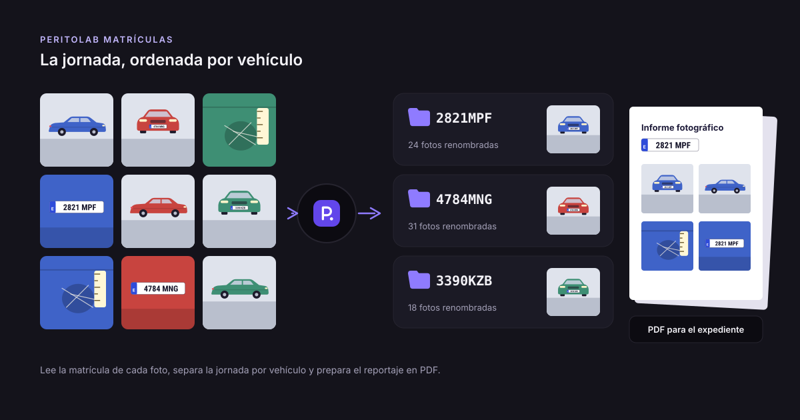
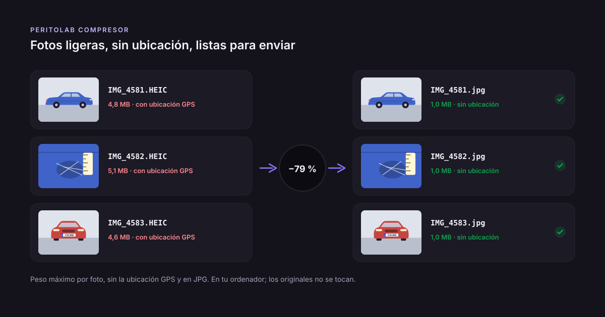

Hoja de recepción de vehículos en el taller: qué debe incluir
Publicado el · por el equipo de PeritoLab
«Ese arañazo ya estaba.» «Pues cuando lo traje no estaba.» Cualquier taller ha vivido esta conversación al entregar un coche. Sin un documento firmado y sin fotos con fecha del estado en que llegó el vehículo, es tu palabra contra la del cliente. La hoja de recepción sirve justo para eso: dejar por escrito, al recibir el coche, qué se va a hacer y cómo llegó. Esta guía explica qué datos exige la normativa al dejar un vehículo en el taller, qué conviene añadir aunque no sea obligatorio y cómo hacer las fotos para que de verdad te defiendan.
Lo que exige la ley: el resguardo de depósito
En España, la norma general sobre talleres de reparación de automóviles es el Real Decreto 1457/1986. Su artículo 14 dice que, cuando el vehículo se queda en el taller, ya sea para hacer un presupuesto o para una reparación ya aceptada, el taller tiene que entregar al cliente un resguardo del depósito. Ese resguardo debe incluir, como mínimo:
- El NIF y el domicilio del taller.
- El nombre y el domicilio del cliente.
- La identificación del vehículo: marca, modelo, matrícula y kilómetros.
- Si el coche se deja para hacer el presupuesto o para repararlo.
- Una descripción breve de la reparación o de los servicios encargados, con su importe si ya se conoce.
- La fecha prevista de entrega del presupuesto o del vehículo reparado.
- La fecha y la firma del taller.
Si hay presupuesto y lo firman el taller y el cliente, ese presupuesto hace las veces de resguardo. Y el cliente tiene que presentar el resguardo para recoger el presupuesto o retirar el coche.
Algunas comunidades autónomas tienen además su propia normativa sobre talleres, así que conviene consultar también la de la tuya.
Lo que la ley no pide y te conviene añadir
El resguardo protege al cliente: deja claro qué ha encargado y cuándo lo tendrá. Pero el artículo 14 no obliga a anotar en qué estado llegó el coche, y eso es precisamente lo que protege al taller. Una buena hoja de recepción añade:
- Los kilómetros y el nivel de combustible a la entrada, comprobados en el cuadro.
- Los daños que ya traía: cada arañazo, golpe o pieza rota, con su sitio en el coche. Mejor numerados, para poder referirse a ellos.
- El motivo de entrada con las palabras del cliente: «ruido al frenar», «revisión de los 60.000».
- Objetos de valor que se quedan dentro, si los hay.
- La firma del cliente sobre todo lo anterior. Sin firma, la lista de daños es solo una nota del taller.
- Tus condiciones, si las tienes: plazos para recoger el coche, qué pasa con las piezas sustituidas… Las redactas tú, y conviene que las revise tu gestor o asesor.
Cómo hacer las fotos de recepción
La descripción escrita de un daño siempre deja dudas. Una foto con fecha y hora, no. Para que las fotos sirvan:
1. Empieza por la matrícula. Así, más tarde, cualquiera sabe de qué coche son las fotos que siguen. 2. Haz las cuatro esquinas, en diagonal, para que se vea el coche entero desde cada lado. 3. Fotografía cada daño dos veces: una de lejos, para que se vea dónde está, y otra de cerca, para que se vea cómo es. 4. El cuadro de instrumentos, con los kilómetros y el combustible. 5. Con buena luz. Un arañazo que no se ve en la foto es como si no estuviera documentado.
Comprueba que el móvil tenga la fecha y la hora automáticas: es lo que demuestra que la foto se hizo al recibir el coche y no después. La guía de qué fotos hacer en un peritaje de automóvil explica con más detalle cómo fotografiar un daño para que se aprecie.
Al entregar el coche
La recepción tiene su pareja: la entrega. Con las fotos de entrada a mano, basta con hacer las mismas al terminar y enseñárselas al cliente lado a lado. Si está conforme, firma la entrega y la conversación del arañazo ya no llega a empezar. Si el coche era de un siniestro, el perito te pedirá también esas fotos: tenerlas ordenadas por matrícula ahorra llamadas y reenvíos.
Del móvil a la hoja firmada, sin pasar fotos a mano
El problema de las fotos de recepción no suele ser hacerlas, sino encontrarlas después: se quedan en el móvil de quien recibió el coche o en un chat. PeritoLab Taller lo resuelve con el móvil de siempre. Haces las fotos al recibir el coche y llegan solas al ordenador del taller a través de OneDrive o Google Drive. Allí se ordenan por matrícula, una ficha por coche. En la ficha apuntas el cliente, los kilómetros, el combustible y el motivo de entrada, y rodeas cada daño sobre la foto. La hoja de recepción sale en PDF, con los daños numerados, tus datos y tus condiciones, y se firma en pantalla o en papel. Al entregar, compara el antes y el después con el cliente delante, y envía al perito las fotos ligeras y sin GPS. Las fichas y las fotos se quedan en el ordenador del taller.
En resumen
- La ley pide un resguardo de depósito con los datos del taller, del cliente y del vehículo, el encargo y la fecha de entrega.
- Lo que te protege es anotar el estado del coche: kilómetros, combustible y daños previos, firmado por el cliente.
- Fotos de recepción: matrícula primero, cuatro esquinas, cada daño de lejos y de cerca, y el cuadro.
- Al entregar, las mismas fotos para comparar, y la firma de conformidad.
Esta guía es informativa y no sustituye el asesoramiento de un profesional sobre la normativa que se aplica a tu taller.
Sigue leyendo

Cadena de custodia de las fotos del peritaje: la huella SHA-256Qué es la huella SHA-256 de una foto, qué demuestra y qué no, cómo calcularla en Windows sin instalar nada y cómo incluirla en el informe pericial.
Cómo juntar varias fotos en un PDF en Windows, sin subirlas a ninguna webCómo juntar varias fotos en un PDF, una por página, en Windows y sin subirlas a ninguna web: Microsoft Print to PDF paso a paso y con muchas carpetas.- Cómo ordenar las fotos por fecha de captura en WindowsPor qué las fotos del peritaje salen desordenadas por nombre y cómo ordenarlas en Windows por la fecha en que se hicieron, sin instalar nada.